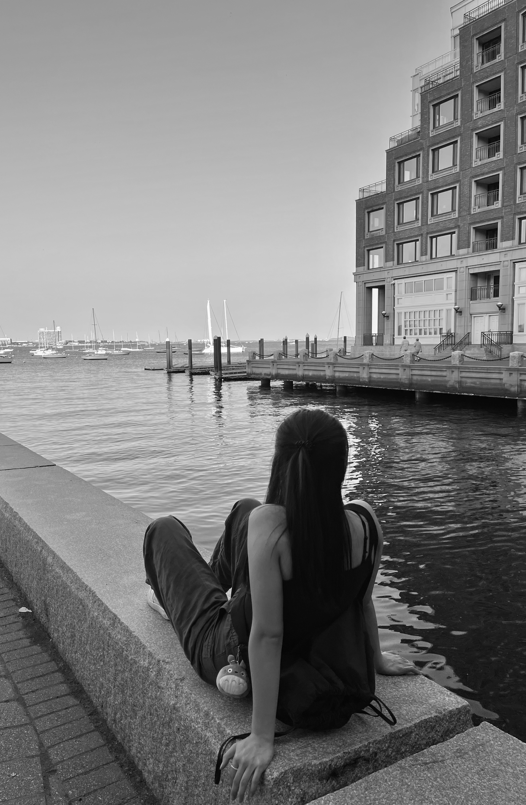

Connect with me on LinkedIn
Kayia Chen
Hello! I’m Kayia, a senior Business Administration student at the University at Buffalo, with a focus on Marketing and a Minor in Strategic Media Message. I've always been interested in aesthetics and art. My minor has allowed me to explore graphic design, digital art, typography, and web design. My goal is to bring my passion and skills into web development or business marketing. I am looking forward to leading collaborations with marketing teams, product designers, and UX designers in the beauty industry or tech field.